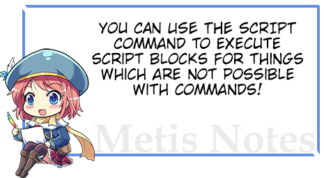
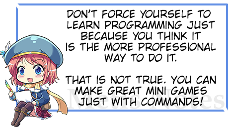

W
ith Visual Novel Maker，一旦您掌握了基础知识，就可以轻松地为您的视觉小说创建自己的迷你游戏。在开始制作迷你游戏之前，请确保您已阅读并理解了整个“初学者指南”。此外，随时查看我们的“论坛”以获取帮助！无脚本制作迷你游戏
在 VN Maker 中，您可以无需编程即可创建迷你游戏。您只需创建一个场景，然后使用图片、热点、音乐和声音来制作您的迷你游戏。对于迷你游戏逻辑，建议使用 Common Events 和/或子场景（请参阅 Call Scene 命令）来保持概述。
一个例子是您可以研究的
Black Jack Example游戏，以了解更多关于如何无需脚本即可制作迷你游戏。使用脚本制作迷你游戏

如果您有编程经验，也可以在必要时通过真正的编程来创建迷你游戏。在这种情况下，您应该先阅读整个
Scripter's Guide，并查看 Engine API Documentation以及 GameScript API Documentation。HTML
